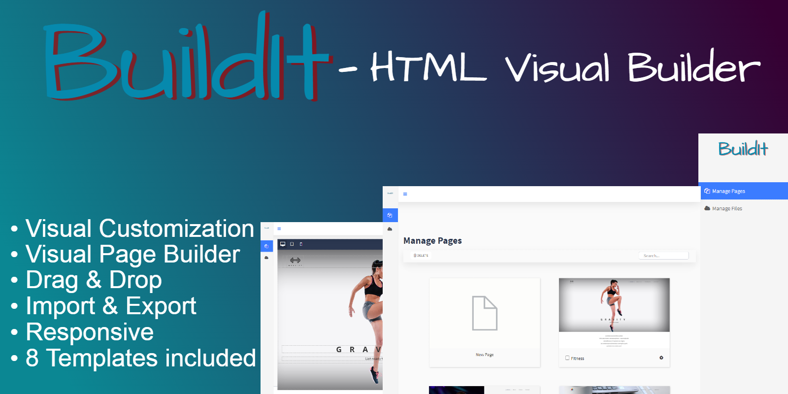

Popular Web Authoring Applications
Content Management Systems (CMS)
Platforms like WordPress and Joomla simplify website creation and management. They provide templates and plugins, making it easy for users to create content without extensive coding knowledge.

Website Builders:
Tools such as Wix and Squarespace allow users to design websites through a drag-and-drop interface. These applications are ideal for individuals and small businesses seeking quick and visually appealing solutions.
HTML Editors

Graphical Design Tools